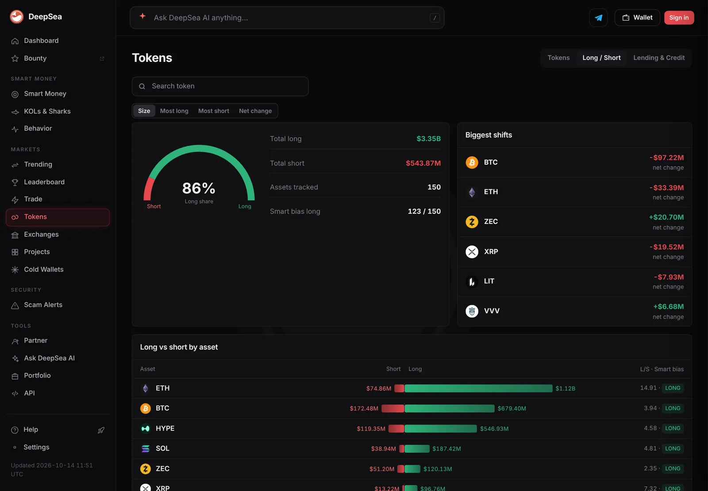
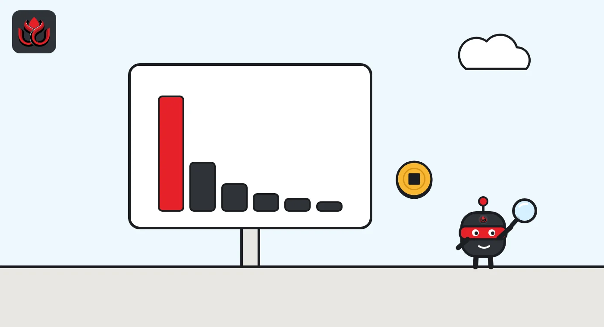

Bitcoin dominance and crypto market cap explained: why sites say 58% or 60%
Total crypto market cap adds up the market value of every tracked coin, and bitcoin dominance is bitcoin's share of it. As of November 2, 2026, the total was about $2.6 trillion to $2.7 trillion and bitcoin's share about 58% to 60%, depending on the data site.
Key points
- A coin's market cap is its price times its circulating supply. Total crypto market cap is the sum across all tracked coins.
- Bitcoin dominance is bitcoin's market cap divided by the total market cap.
- As of November 2, 2026, CoinGecko showed a total of $2.69 trillion with bitcoin at 58.25%. CoinMarketCap showed $2.60 trillion with bitcoin at 59.9%.
- The two sites differ because they track different coin lists and handle wrapped and staked tokens differently.
 What DeepSea's data shows
What DeepSea's data shows
Dominance shows where value sits; positioning shows where traders lean. Across the 150 assets on DeepSea's long/short page, the perpetual futures traders it tracks held $3.35 billion of longs against $543.87 million of shorts on November 2.
The two largest coins lead that book too. Ether longs totaled $1.12 billion and bitcoin longs $679.40 million. But the biggest moves were cuts: DeepSea shows net bitcoin exposure down $97.22 million and ether down $33.39 million since its previous reading.

Data: DeepSea (desea.io), checked November 2, 2026, 7:55 a.m. ET.
What is crypto market cap?
Market capitalization, or market cap, is a quick way to size a coin. It is the current price multiplied by the circulating supply, the number of coins available to trade.
Take bitcoin. When we checked CoinMarketCap at 8 a.m. ET on November 2, 2026, it showed a price of about $77,658 and a circulating supply of 20,105,365 BTC. Multiply them and you get roughly $1.561 trillion, which matches the market cap the page displayed.
Total crypto market cap is the same calculation added up across every coin a data site tracks. It is a headline number for the size of the whole market.
What is bitcoin dominance?
Bitcoin dominance is bitcoin's share of the total. CoinMarketCap's dominance chart defines it as bitcoin's market cap divided by the combined market cap of all cryptocurrencies. Traders often shorten it to BTC.D.
The same idea works for any coin. Ether dominance is ether's market cap as a share of the total, and stablecoin dominance is the share held by dollar-pegged tokens.

What are the numbers as of November 2, 2026?
Here is what the two biggest data sites showed when LC Insight checked them on the morning of November 2, 2026, around 8 a.m. ET. CoinGecko's global charts put total crypto market cap at $2.69 trillion, with 24-hour trading volume of $48.74 billion. Bitcoin dominance was 58.25% and Ethereum dominance 10.4%.
CoinMarketCap put the total at $2.60 trillion, with 24-hour volume of about $47.95 billion. Bitcoin dominance was 59.9% and ether 10.7%. A month earlier, CoinMarketCap's own history put bitcoin at 59.1%.
These numbers move by the minute, so treat them as a snapshot.
Market share as of November 2, 2026
% of total crypto market cap
Sources: CoinGecko global charts and CoinMarketCap bitcoin dominance chart, accessed November 2, 2026
How do you calculate dominance yourself?
You need two numbers from the same source at the same moment: bitcoin's market cap and the total market cap. Divide the first by the second and multiply by 100.
A simple illustration with round numbers: if bitcoin's market cap is $1.5 trillion and the total is $2.5 trillion, dominance is 60%. If bitcoin's price stays flat but the rest of the market adds $500 billion, the total becomes $3 trillion and dominance drops to 50%, even though nothing happened to bitcoin.
That is the key point. Dominance is a ratio, so it can move because of bitcoin, because of everything else, or both. A falling dominance during a rally means other coins rose faster. A falling dominance during a crash can mean stablecoins, which hold their dollar value, became a bigger slice of a smaller pie.
Mixing sources breaks the math. Bitcoin's market cap from one site divided by the total from another gives a number that matches neither site, because the two totals are built from different coin lists.
Why do CoinGecko and CoinMarketCap show different numbers?
The two sites do not track the same list of coins, and they make different choices about what to count. CoinGecko says it leaves crypto-backed tokens such as wrapped, bridged and staked tokens out of its global market cap. Those tokens are claims on coins already counted elsewhere, so including them would count the same value twice.
A bigger or smaller total changes everyone's share. That is why the same bitcoin market cap can produce a dominance figure of 58.25% on one site and 59.9% on another. When you compare dominance over time, stick to one source.
What is 24-hour volume, and how does it fit in?
Market cap measures size. Trading volume measures activity: the dollar value of all trades reported over the past 24 hours. CoinGecko showed $48.74 billion of volume across the whole market on November 2, 2026. CoinMarketCap showed about $15.4 billion for bitcoin alone.
Comparing the two gives a sense of how actively a coin trades relative to its size. Bitcoin's 24-hour volume on CoinMarketCap was about 1% of its market cap. A small token with a high market cap but very little volume deserves more caution, because its price may not hold if holders try to sell.
Volume figures have their own limits. They depend on which exchanges a site includes and how it filters out suspicious trading, so they also vary between data providers.
What does a rising or falling dominance mean?
Dominance rises when bitcoin does better than the rest of the market, or falls less in a sell-off. It drops when other coins outperform, a period traders often call an altcoin season.
Stablecoins complicate the picture. Their market cap stays roughly flat in dollar terms because each token aims to be worth $1. In a falling market, their share of the total goes up, which can push bitcoin dominance down even if bitcoin is holding up well against other coins. Some traders look at bitcoin's share of the market excluding stablecoins for that reason.
Ether's share has been under pressure this fall; LC Insight covered the record outflows from ether ETFs in October.
What are the limits of market cap?
Market cap is a rough measure, not the amount of money invested. It multiplies the last price by all circulating coins, even though only a small slice trades on any given day. A thinly traded token can show a large market cap that could never be cashed out at that price.
Circulating supply is also an estimate for many projects, especially ones with locked team or investor tokens. Fully diluted valuation, which uses the maximum supply instead, is often much higher. For bitcoin the gap is small: CoinMarketCap lists a maximum supply of 21 million against about 20.1 million circulating.
Finally, a market cap figure is only as good as the price feeding it. Data sites build each price from the exchanges they choose to track. For small tokens traded on only a few venues, a single exchange can set the price, and with it the whole market cap.
LC Insight analysis
This section is our reading of the facts above, not a statement of fact.
- We think dominance near 58% to 60% shows a market where most of the value still sits in one asset. Rallies in smaller coins have not shifted that much.
- The real trap is comparing figures from different sites. On November 2 the two sites were more than a point and a half apart, purely because of different coin lists and methods.
What's next
- Bitcoin dominance moving decisively above 60% or below 55% on a single data source
- Stablecoin share of total market cap during sell-offs
- Ether dominance after the October ETF outflows
Frequently asked questions
What is a good bitcoin dominance level?
There is no right level. Dominance is a description of the market's mix, not a target, and it shifts with prices across thousands of coins.
Is total crypto market cap the same as money invested?
No. It is price times circulating supply. Far less money has actually flowed in, and far less could flow out at current prices.
Why does bitcoin dominance differ between websites?
Each site tracks a different list of coins and counts wrapped, bridged and staked tokens differently, so the total, and every share of it, differs.
What was bitcoin's market cap on November 2, 2026?
About $1.56 trillion on CoinMarketCap at 8 a.m. ET, with bitcoin near $77,658.
Disclaimer. This article is based on public information and the sources listed below as of the update time shown. It is for information only and is not investment, legal or tax advice. Figures may change as companies and authorities publish new data.